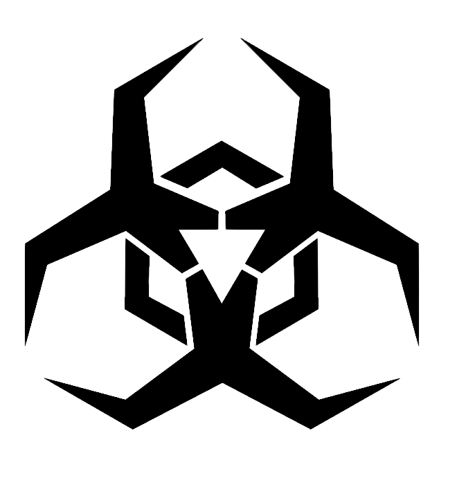

Cyber Security - the body of technologies, processes,
and practices designed to protect networks, devices,
programs, and data from attack, damage, or
unauthorized access.

But, why? I know not to do bad things on the internet. That's all I need to do, right? Not necessarily.
According to Gartner forecast, the worldwide Cybersecurity spending to reach $123B In 2020 especially in Could Security. With the rapid growth of cloud computing, cybersecurity risk is increasing with the poor configuration of cloud services. In order to keep our sensitive data and personally identifiable information (PII) away from the cyber attacks, cybersecurity become an essential role for an organization or individual to avoid cyber attacks.
cybercrime not only affect individuals but also causes a tremendous amount of economic damage.
According to the Cybercrime Magazine, Global Cybercrime Damages Predicted To Reach $6 Trillion Annually By 2021.
Therefore, cybersecurity becomes the most important worldwide topic.
If you want to avoid any damage from cyberattacks,
then you should need to learn about the importance of cybersecurity now.
A distributed denial-of-service (DDoS) attack is a malicious attempt to disrupt the normal traffic of a targeted server, service or network by overwhelming the target or its surrounding infrastructure with a flood of Internet traffic.
A man-in-the-middle (MitM) attack is when an attacker intercepts communications between two parties either to secretly eavesdrop or modify traffic traveling between the two. Attackers might use MitM attacks to steal login credentials or personal information, spy on the victim, or sabotage communications or corrupt data.
Phishing is a cybercrime in which a target or targets are contacted by email, telephone or text message by someone posing as a legitimate institution to lure individuals into providing sensitive data such as personally identifiable information, banking and credit card details, and passwords.
Malware is a "malicious software variants" refers to software that damages devices, steals data, and causes chaos. There are many types of malware — viruses, Trojans, spyware, ransomware and more.
SQL injection is a web security vulnerability that allows an attacker to interfere with the queries that an application makes to its database. It generally allows an attacker to view data that they are not normally able to retrieve. This might include data belonging to other users, or any other data that the application itself is able to access. In many cases, an attacker can modify or delete this data, causing persistent changes to the application's content or behavior.
A zero-day (or 0-day) vulnerability is a software vulnerability that is discovered by attackers before the vendor has become aware of it. At that point, no patch exists, so attackers can easily exploit the vulnerability knowing that no defenses are in place. This makes zero-day vulnerabilities a severe security threat.
Social Engineering is the act of tricking someone into divulging information or taking action, usually through technology. The idea behind social engineering is to take advantage of a potential victim’s natural tendencies and emotional reactions.